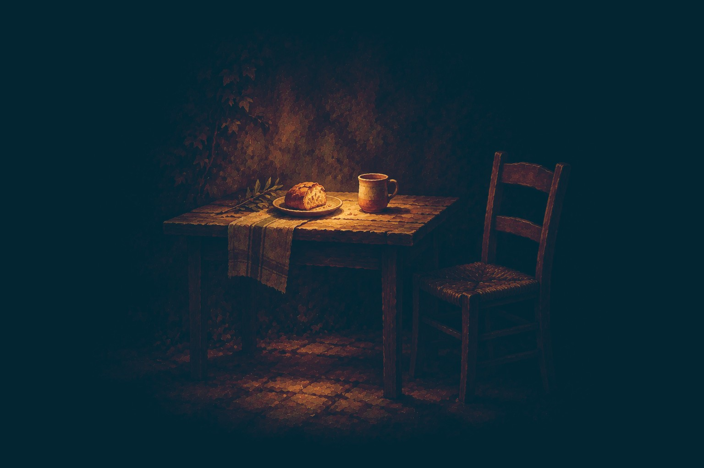
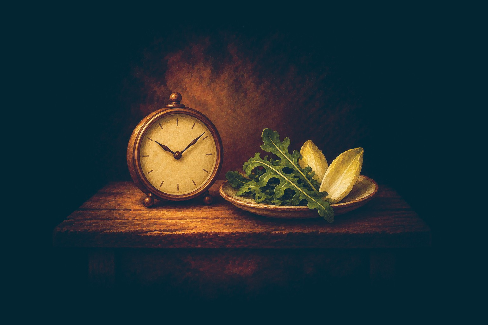
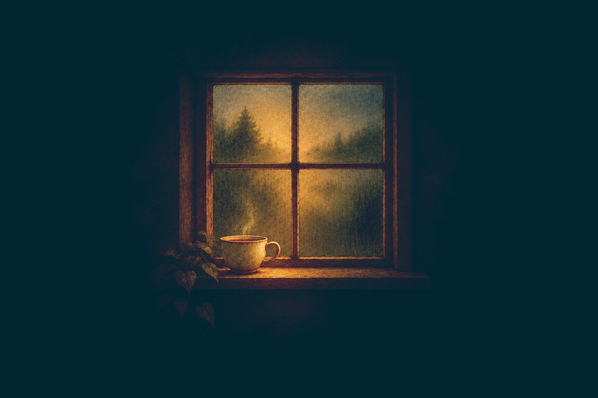

18 oct 2026
Dormir mal y la barriga: por qué la misma comida te sienta peor al día siguiente
Qué hace tu cuerpo por la noche con el intestino, por qué dormir mal baja el umbral y qué se puede cuidar con luz y rutina.
Leer
15 oct 2026
Náuseas después de comer con las pruebas normales: qué pasa y qué ayuda
Por qué aparece la náusea justo después de comer, qué es la dispepsia funcional y un día de gestos para probar por una temporada.
Leer12 oct 2026
Colon irritable: tres historias distintas bajo el mismo diagnóstico
Tres formas de llegar al mismo diagnóstico, qué cambia en cada una y tres preguntas para hacerte esta noche.
Leer8 oct 2026
SIBO que vuelve tras el tratamiento: por qué recae y qué se mira antes
Dos historias con el mismo tratamiento y distinto orden, y lo que se suele mirar antes de tocar a las bacterias.
Leer
1 oct 2026
Cuando quitar alimentos se convierte en miedo a comer
Cinco peldaños para situarte, por qué se forma el círculo vicioso y cómo se sale, siempre con ayuda profesional.
Leer
27 sept 2026
Tu lista de alimentos se encoge y sigues con síntomas: cómo recuperar comida en orden
Por qué la lista se encoge, qué le pasa a cada alimento y cómo ordenar lo que comes con tres colores.
Leer
20 sept 2026
Digestiones lentas: por qué la comida parece quedarse ahí
La cadena de avisos de la digestión, por qué el ardor no siempre significa exceso de ácido y cuatro gestos sin riesgo.
Leer13 sept 2026
Hinchazón y sueño: por qué tu barriga responde a las dos últimas noches
Por qué el miércoles se tuerce por lo que pasó el domingo y el lunes, y cómo verlo con un número al día.
Leer
1 sept 2026
Por qué te hinchas con casi todo, y por qué quitar alimentos no lo arregla
Por qué el mismo plato te sienta bien un día y mal otro, y dos gestos para después de sentarte a comer.
Leer11 ago 2026
Colon irritable: por qué la dieta sola no lo arregla
El termostato del intestino, por qué quitar alimentos no lo ajusta y dos gestos para empezar.
Leer9 ago 2026
Por qué la misma comida te sienta bien un día y mal otro
Qué mirar cuando la respuesta no está en el plato, y un día entero con menos alerta.
Leer
4 ago 2026
Niebla mental después de comer: qué es la zonulina
Qué es la zonulina, qué la activa y un día de pautas para probar por una temporada.
Leer